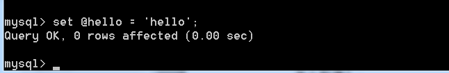
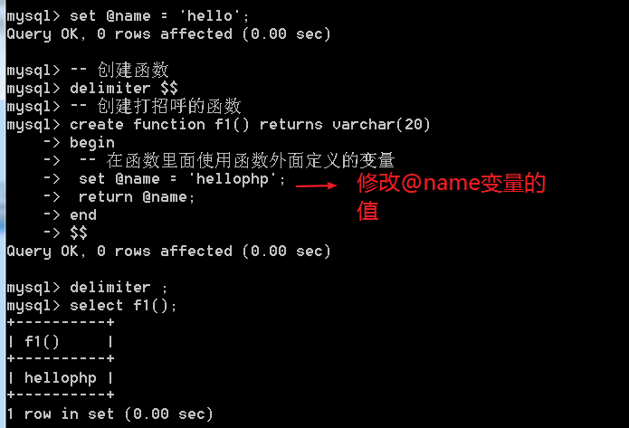
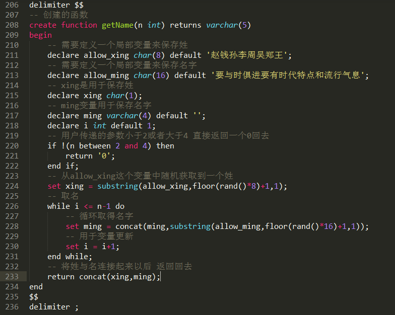

SQL编程–触发器(trigger)
场景：
日志系统，记录对学生表有哪些操作！
解决的问题：
得到每条学生记录被修改的时机，才能发出记录日志的动作！
执行某段操作，需要得到当前处理的记录的信息！
触发器：一种编程设计！类似js的基于事件编程的程序设计的理念！可以在某个表的每条记录上，设置一个事件，从而对该表上的某些操作，加以监听！一旦所监听的行为出现，则会执行相应的代码。
1 | 记录 =button |
以上的所有行为，都是采用 sql 完成的
语法
创建触发器
create trigger 触发器名字 触发条件，监听的内容，触发后执行的操作
1 | CREATE TRIGGER trigger_name trigger_time trigger_event ON tbl_name FOR EACH ROW trigger_stmt |
其中，触发条件，是由 事件的时机，与事件的内容 组成
时机：之前before，和之后after！
事件：增加insert，删除delete，修改update
因此，一共只有六种事件：
before insert before delete before update
after insert after delete after update
监听的主体是由表中的记录发出的
on table_name for each row
执行的操作，就是一段 sql的集合！


删除触发器
drop trigger trigger_name
查看触发器的创建语法
show create trigger trigger_name
在触发程序中得到当前触发的记录信息
有，两个！
new（新的），old（旧的）
new，和old，都表示触发程序的记录！
new：新的记录。old：旧的记录！
取决于当前操作（intser，update，delete）去使用其中某个：
insert，增加记录，没有旧记录，只有new关键字可以使用
delete，删除记录，没有新纪录，只有old可用！
update，更新，既有新纪录，也有旧记录，更新前是旧记录，而更新后是新纪录！因此可以 new和 old

更新日志：
记录更新日志，要求是，只对某部分同学完成更新日志！
只记录，身高超过175学生的更新记录！记录学生id和修改前的身高与之后的身高
需要额外的增加条件判断！
逻辑分支语句：
1 | if 条件 then |
sql语句的结束符问题
可以修改 最外层的语句结束符达到目的！
delimiter $$
将语句结束修改成 \$\$
记住用完后要再修改回来！
如果 触发程序由多条语句组成块。此时就需要使用
begin
end 将语句块包裹！
最终显示的代码

SQL编程–存储函数
一：SQL也是一门程序设计语言！可以用其编程！
二：基本常规的编程要素：
- 变量，运算符，表达式，流程控制，函数
变量
典型的，字段名就是变量名，字段就是变量！
特殊的变量，例如系统内置变量（character_set_xxx, autocommit）
变量的典型操作：
- 赋值
- 取得值
用户自定义变量
用户自定义变量需要使用 @作为变量名的前缀，用于区分是否是系统内置变量！
set 语句 可以完成对变量的设置！
1 | set 变量名=变量值; |

怎么取得？
采用select 语句即可！
select 变量名

SQL编程的的实现
一共有三种编程方式：
触发器，存储函数（自定义函数），存储过程
函数
内置函数
对于mysql来讲，有内置函数！
rand(),生成随机数的函数，得到0-1之间的随机数

典型的为了得到某个范围内的随机数，需要* N倍：
需要配合上 取整使用，达到取得随机整数的目的：
floor() 向下取整：
substring(字符串，位置，长度) ，截取字符串函数
注意，从1开始的下标! 而且是以为字符为单位：

char_length()字符数量

length()字节长度

concat() 连接字符串

自定义函数
函数的要素：
函数名，函数体（返回值），函数参数
函数的基本使用：
声明，调用
声明
注意多条语句，修改结束符
创建一个打招呼的函数

调用
类似于系统函数即可！
select 函数名
注意，函数是存储在某个数据库内，因此与库是相关的！

参数
注意，参数也是需要有类型之分
而且，不用使用@。原因是函数内的变量是不用区分的！参数是一个局部变量！

函数局部变量与函数外全局变量的作用域问题
作用域是重叠的！在函数内，可以访问到函数外所定义的全局变量！

局部变量
在 函数内的变量！
此时在函数内，使用 关键字 declare 来声明局部变量（js中类似var的作用）！
流程控制
分支
1 | if 条件 then |
循环
1 | while 条件 do |
示例：求1-N之和：

练习：拼凑随机的名字！
getName(2|3|4)
参数为名字的长度，而返回值为名字！
业务逻辑：
取得姓，在某个集合内获取的！
再取的名字（根据字数，取得的数量不同）。

SQL编程–存储过程
存储过程(procedure)
与函数类型，都是一个功能模块的代码！
相对于函数，函数，倾向于某个功能点。
而 存储过程，倾向于某个业务逻辑的整体实现！
功能点：自由得到用户名，函数
业务逻辑：向 select_student 表内，插入1W条测试数据！，过程
语法
函数：create function
过程：create procedure
创建
1 | create procedure 过程名 (参数列表) |
注意没有返回值
调用
不能直接调用！需要使用 call 关键字 调用 存储过程：

过程，是一个独立的业务逻辑，不能出现在表达式内。
存储过程的参数
功能类似函数的参数，也是在运行时传递数据。
但是，参数是分成 三种 类型：
输入，in
调用过程时，给过程传递数据，就是输入参数
使用过程来得到某个数的阶乘！

输出，out
调用过程之后，可以利用该参数，将数据传递出来！

输入输出，inout
同时完成 输入 和 输出功能。既可以输入数据，也可以输出数据！
利用：in，out，inout来声明参数，最像 php中 引用传递！


典型，可以利用过程，增加测试数据：
select_student这个表中写入1W
案例：往某个表中写入1W条数据
1W条学生数据！